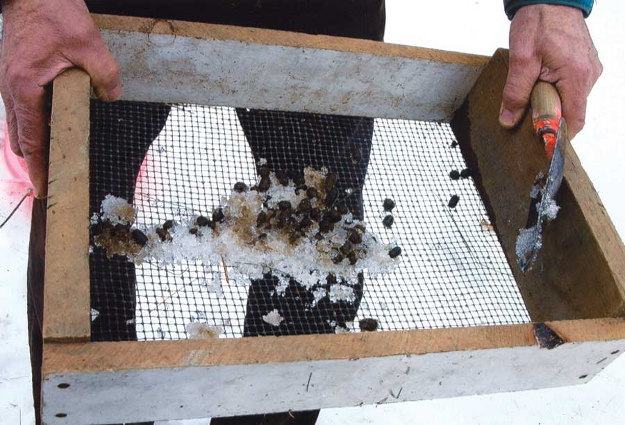

As an organic gardener, I’m always on the lookout for natural organic fertilizer. I started using deer manure when I would come across piles of it in the fields alongside our garden.
My favorite time of year to hunt for deer droppings is in winter, when it shows up against the snow. I built a little scoop out of scrap lumber and hardware cloth to pick up the pellets, leaving the snow behind. I look for established deer runs to collect the greatest amount. After the snow melts, it’s not as easy to spot the nearly black piles.
|
 RONALD VAN ORDEN Collect deer droppings in a handy screened scoop. |
|
|